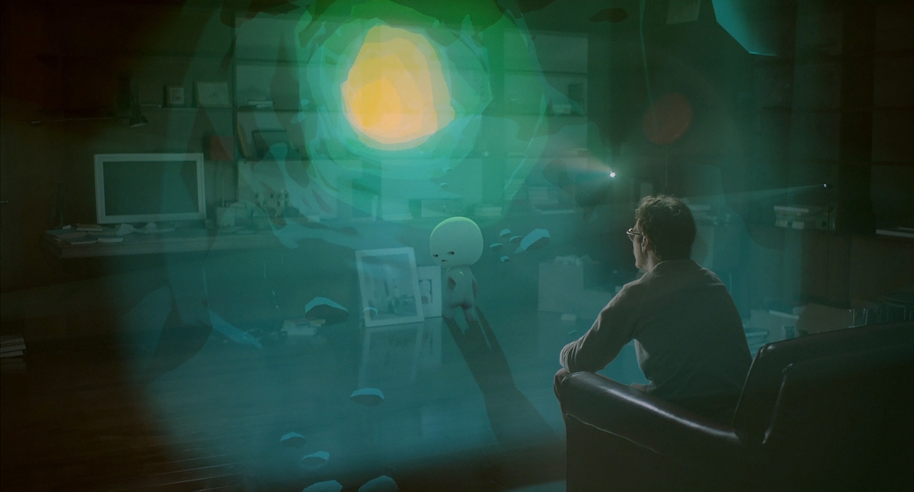

Annie Atkins award-winning graphic designer
If you've seen Wes Anderson’s very pink and very meticulous Grand Budapest Hotel you will be aware of how visually complex it is.
In film, a graphic designer plans and creates every item that would be designed in real life; from packaging and typefaces to the pattern on a carpet.
On Budapest, Dublin-based designer Annie Atkins found herself faced with hundreds of designed elements that needed to be created.
"Continuity is tedious but people notice when you get it wrong,” she says.
Read more
here
Interview: Michael Kaplan
STARWARS THE FORCE AWAKENS Costume Designer

It's possible that no single person will exert more influence over fashion trends in the coming year than Michael Kaplan.
No stranger to iconic films, he has also been responsible for the costume designs for Blade Runner, Flashdance, Fight Club, and Miami Vice.
More recently, The Force Awakens director J.J. Abrams brought him on to re-envision the Star Trek reboot.
Now Kaplan is responsible for reinterpreting arguably the most iconic film of the last half century for a new generation of fans, as well as a ferocious generation of diehards.
So, what was it like to shoulder the expectations of a generation of now-adults who spent their childhood flashing light sabers and artfully placing earmuffs on their heads?
Read more Here
Big Stories on the Small Screen
Big Stories on the Small Screen is a major new initiative, funded by the Broadcasting Authority of Ireland and Screen Training Ireland, aimed at developing Irish skills in quality long-form screen drama.

The brain-child of BAFTA-winning filmmaker Neasa Hardiman, Big Stories will support Irish-resident screenwriters, producers and directors who want to develop the essential skills necessary to craft a successful drama series for the international market.
Read more here.
Recent TV productions made in Ireland include: Horror series Penny Dreadful, historical action series The Vikings and gangland crime series Love/Hate.